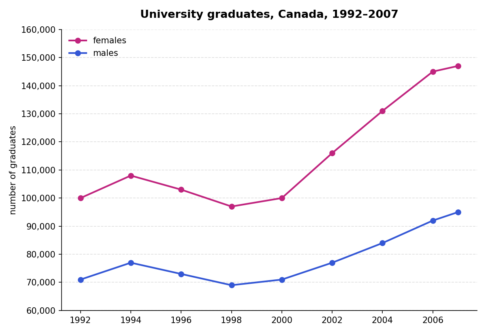

Wordlist — describing data
These words and phrases come from today's article and Writing Task 1 material.
| word / phrase | meaning | example |
|---|---|---|
| climb (verb) | to rise steadily in number or amount over time | Enrolment figures climbed steadily throughout the decade. |
| triple (verb) | to become three times as large | The number of applicants has tripled since the policy changed. |
| share (noun) | the portion or percentage of a total that belongs to one group | The country's share of the global market has fallen in recent years. |
| drop / fall (verb) | to decrease in number or amount | Numbers dropped sharply after the funding was cut. |
| rebound (verb) | to increase again after a period of decline | Sales rebounded quickly once travel restrictions were lifted. |
| resilience | the ability to recover quickly from difficulty | The sector's resilience surprised many economists. |
| pent-up demand | a strong desire or need for something that has built up over time without being satisfied | Pent-up demand led to a surge in bookings once borders reopened. |
| sustainable | able to continue or be maintained over the long term | Analysts question whether such rapid growth is sustainable. |
Complete the sentences with words from the table.
1. House prices have steadily for the past five years.
2. The company's profits have almost since last year.
3. The country's of global exports has grown considerably.
4. Attendance sharply after ticket prices rose.
5. Tourist numbers quickly once the border reopened.
6. The industry's during the crisis was widely praised.
7. caused a surge in sales as soon as restrictions ended.
8. Experts question whether this level of growth is .
Article — The Rise of the International Student
A shorter article than usual, but dense with data. Read it carefully.
Recent data suggests that international education has grown dramatically over the past few decades. According to UNESCO estimates, the number of students studying outside their home country has climbed from roughly two million in 2000 to well over six million today, more than tripling in just over twenty years.
Some countries have benefited from this trend far more than others. The United States hosts the largest number of international students overall, though its share of the global market has fallen slightly in recent years, dropping from around 28 percent in 2001 to closer to 15 percent today. Meanwhile, countries such as Canada and Australia have seen their share rise sharply, partly due to more accessible visa policies and lower tuition costs relative to competitors.
China and India remain, by a wide margin, the two largest sources of international students worldwide, together accounting for close to a third of all students studying abroad. Interestingly, the flow is not entirely one-directional: China itself has become an increasingly popular destination, with the number of foreign students enrolled there rising by an estimated 600 percent between 2003 and 2018.
Financially, the impact is substantial. In several major host countries, international students contribute tens of billions of dollars annually to local economies through tuition fees, accommodation, and everyday spending. In Australia, for example, international education became one of the country's largest export sectors, generating an estimated 40 billion Australian dollars in a single year before the pandemic disrupted global mobility.
That disruption was severe but apparently temporary. Enrolment figures in most major destinations fell by 20 to 30 percent during 2020 and 2021, yet most have since rebounded to, or even exceeded, pre-pandemic levels. Analysts largely attribute this resilience to pent-up demand and the growing perception, among students in developing economies especially, that a foreign qualification remains one of the most reliable routes to global career opportunities.
Whether this rapid growth is sustainable in the long term remains an open question, particularly as some destination countries introduce stricter visa and immigration rules aimed at reducing overall numbers. For now, though, the data points firmly in one direction: more students, from more countries, studying further from home than ever before.
Comprehension — choose the correct answer.
1. According to the article, roughly how much has the number of international students grown since 2000?
2. What has happened to the United States' share of the global international student market?
3. What does the article say about China's role in international education?
4. According to the article, what happened to enrolment during 2020–2021?
5. What does the article suggest could threaten future growth in international education?
Writing Task 1 — the introductory sentence
Look at this Writing task, then complete the introductory sentence using the words in the box.
The graph below shows the number of university graduates in Canada from 1992 to 2007. Summarise the information by selecting and reporting the main features, and make comparisons where relevant.

between · Canadian · graduated · male and female · students
The graph gives information about how many from universities 1992 and 2007.
Which FOUR of these statements describe main features of the graph?
1. The number of graduates fell between 1996 and 1998.
2. The overall rise in numbers was not always steady.
3. Just under 75,000 male students graduated in 1992.
4. More women than men graduated between 1992 and 2007.
5. In 2007, there were nearly 150,000 female graduates.
6. The gap between the number of male and female graduates widened over the period.
7. The trends for male and female graduates were similar.
Note for Alan: I chose 2, 4, 6, 7 as the four main features based on what the sample answer actually discusses (steadiness, the male/female gap, and the overall comparison), and excluded 3 since the sample's own figure ("just over 70,000") doesn't quite match it. This is a judgement call without an official answer key — worth double-checking against the book if you have it.
Writing Task 1 — the sample answer
Here is the full sample answer, continuing from the introductory sentence you just completed.
The graph gives information about how many male and female students graduated from Canadian universities between 1992 and 2007.
Graduate numbers rose in the fifteen years and reached their highest levels in 2007, but there were always more female than male graduates. In 1992, the difference was less marked, at just over 70,000 males and about 100,000 females. However, by 2007 there had been more significant growth in female graduates. That year, they rose to 147,000, compared to 95,000 for men. This meant that by 2000 the gap between the number of male and female graduates had widened.
A more detailed look at the graph reveals that the overall growth in numbers was not always steady. Between 1992 and 1995, there was a slight increase. That was followed by a period of about four years, when numbers fell, then flattened out for two years. After 2000, however, both men's and women's numbers saw their strongest growth rate, and this was well above the increases that had been seen in the early 1990s.
Clearly, there were similar trends for male and female graduates over this period, but the number of women graduating increased at a higher rate than that of men.
Instead of underlining, copy out the sentences from paragraphs 2–4 that describe main features of the graph. Write them out in full below.
Now answer these questions about the sample answer. Write your answers as full sentences. Question 1 is done for you as an example.
1. What is the difference in focus between the second and third paragraphs?
Example answer: The second paragraph focuses on the overall difference between male and female graduate numbers, while the third paragraph looks in more detail at how that growth changed over different periods of time.
2. What is the purpose of the last paragraph?
3. What phrases does the writer use to mean: a) not as great b) stronger?
4. What verb is used to describe the changing size of the gap between men and women?
5. What phrase is used to introduce a close analysis of the graph?
6. What verb is used to mean "didn't change"?
7. What phrase is used with data to mean "a little more than"?
8. What adjective is used that means "small"?
2. To summarise the overall pattern by comparing the trends for male and female graduates.
3. a) "less marked" (not as great) b) "strongest" (stronger, from "their strongest growth rate").
4. "widened" (the gap... had widened).
5. "A more detailed look at..."
6. "flattened out" (numbers flattened out for two years).
7. "just over" (just over 70,000 males).
8. "slight" (a slight increase).
IELTS candidates often make mistakes using superlative forms (e.g. "longest", "most interesting"). Instead of underlining, copy out the superlative forms you find in the sample answer above.
"the highest levels" (paragraph 2), "their strongest growth rate" (paragraph 3).
Superlative forms — practice
Choose the correct alternative in each sentence, written by IELTS candidates.
1. The ___ development can be seen in the USA.
2. The second ___ university course is business studies.
3. In 2000, the ___ number of unemployed students was recorded.
4. ___ important change of school subjects occurred in the 1990s.
5. Regional colleges are where the ___ number of students choose to go.
6. Education is considered the ___ area in life.
7. Tuition fees are ___ the most important considerations for students.
8. Watching television is the ___ activity for many 17-year-olds.
Writing Task 1 — planning a second task
The graph below shows the percentage change in the number of international students graduating from universities in different Canadian provinces between 2001 and 2006. Summarise the information by selecting and reporting the main features, and make comparisons where relevant.
Note for Alan: I don't have exact figures for this particular chart to recreate it precisely, but the four planning questions below are about approach and strategy rather than specific data, so they work fully on their own.
1. How would you introduce the task?
2. What are the key features in the information?
3. How would you highlight the key features?
4. How would you group the information?
Grammar — choosing the correct verb tense
Choose the correct verb tense in these sentences, written by IELTS candidates.
1. There was a ten-year period, during which figures ___.
2. By 2008, the percentage of students choosing science subjects ___ markedly.
3. Between 2000 and the present day, the numbers ___ steady.
4. Over the past few decades, there ___ a rapid development in educational technology.
5. After 2005, a more significant change ___ place.
6. Since the 1990s, graduates ___ higher unemployment rates.
7. The situation ___ unchanged for the next two years until universities were opened.
8. In 2002, the university intake was stable, but prior to that, it ___.
Complete the summary by writing the correct form of the verb in brackets.
The number of men obtaining degrees in science from Callum University has risen (rise) since 1995, (example) with the trend steady.
Between 1995 and 1997, the university a slight increase from just over 4,000 graduates to just under 5,000. This was followed by a period during which numbers a little and then stable.
Between 2000 and 2005, the university a dramatic increase in male graduates, as their numbers a peak of 7,800, after which they to their current figure of 6,000.
Note for Alan: I accepted "not always being" for blank 1 to keep the sentence grammatical with "with" — if your book's answer is simply "was not always", it's worth telling me so I can adjust.
Key grammar — past simple, present perfect simple & past perfect simple
Complete this table with the past simple and past participle forms of each verb.
| infinitive | past simple | past participle (has/had + ) |
|---|---|---|
| reach | reached (example) | reached |
| fall back | ||
| rise | ||
| widen | ||
| take place | ||
| experience |
Quick reference
Past simple — for a completed action or state at a specific point or period in the past (e.g. "Numbers fell in 1998").
Present perfect simple — for something that started in the past and continues to be true, or is relevant, now (e.g. "Numbers have risen since 1995").
Past perfect simple — for an action or state completed before another point in the past (e.g. "By 2005, numbers had fallen").
Day 3 complete! 🎉
All 8 tasks done. Come back tomorrow for the next day.